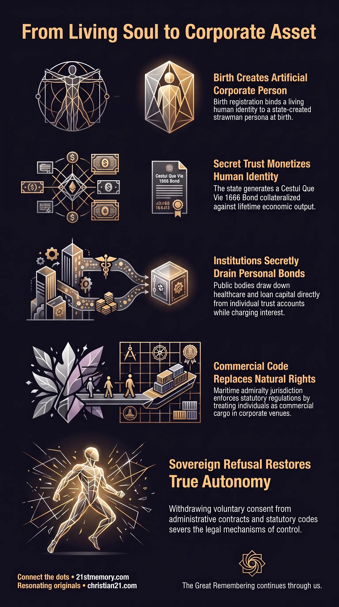

Legal Capture
Legal Capture — How birth registration converts a living soul into a financialized corporate asset.
Legal Capture is the systematic conversion of a living human soul into a financialized corporate asset at the moment of physical birth.
Test your understanding of Legal Capture — the conversion of a living soul into a financialized corporate asset through the Birth Certificate, the corporate fiction, and the Cestui Que Vie 1666 Bond.

Legal Capture — How birth registration converts a living soul into a financialized corporate asset.

The Matrix of the Corporate Fiction — The strawman persona through which statutory codes, debt, and administrative control are imposed.

Your birth certificate is a financial bond — The Birth Certificate and Cestui Que Vie 1666 Bond that collateralize a living child for state debt.
Legal Capture is the systematic conversion of a living human soul into a financialized corporate asset at the moment of physical birth. Through the creation of fraudulent legal structures and institutional instruments, administrative systems establish total jurisdictional dominion over living individuals without their conscious knowledge or informed consent. This legal framework converts sovereign human beings into bound collateral, anchoring them to artificial financial obligations, corporate fictions, and statutory governance. By replacing organic law with statutory codes and administrative mandates, legal capture operates as a key mechanism for structural enslavement, resource extraction, and psychological management.
The core mechanism of legal capture relies on the creation of an artificial corporate fiction that mimics the name of the living individual. Through this paper entity, state systems, financial institutions, and corporate bodies transact, impose debt, and execute administrative control. Rather than governing through physical force alone, legal capture uses psychological coercion, economic leverage, and continuous administrative demands to ensure that individuals police themselves within an engineered matrix of artificial laws.
The primary revelation of legal capture is that every human birth within the current administrative system triggers the secret issuance of a commercial bond. When a child is born, the state issues a Birth Certificate that establishes a commercial trust known as the Cestui Que Vie 1666 Bond. This bond converts the living individual's identity into a financial instrument traded in international financial markets, with primary trust accounts held in U.S. Dollars in American financial repositories. Living souls are never informed that their economic output, personal energy, and legal identity have been pledged as collateral for national and international debts.
A second critical revelation is the institutional exploitation of these trust accounts by state entities. Institutions such as the National Health Service (NHS) and public education boards systematically draw down funds directly from an individual's personal Cestui Que Vie 1666 Bond to pay for medical treatments, prescriptions, and institutional services. While citizens are told that these services are funded through public taxation, state agencies secretly clear charges against the individual's underlying trust account. Similarly, Student Loans are fully backed and disbursed directly from the student's own bond on the day of issuance. Educational institutions and lenders then charge exorbitant interest rates and harvest over one hundred percent profit on capital that was drawn from the student's own trust, generating artificial financial stress, debt enslavement, and emotional anxiety.
Furthermore, legal capture replaces organic human law with fraudulent statutory administration. Through the proliferation of Acts, Statutes, and Policies, legal authority is shifted away from natural rights toward corporate regulation. Citizens are trained to obey administrative codes, pay fraudulent utility bills and taxes, and submit to statutory courts that possess no lawful jurisdiction over living souls. This system relies on the Rothschild Secret Covenant principle to make the population police themselves through societal conditioning, fear of authority, and institutional habituation.
The operational sequence of legal capture begins immediately after childbirth:
Registration and Informing: Parents sign state birth registration documents, unknowingly surrendering legal guardianship of the child's commercial identity to the state.
Creation of the Corporate Fiction: The state constructs a commercial strawman account using the child's name in capital letters or legal styling, creating an artificial corporate fiction.
Issuance of the Cestui Que Vie 1666 Bond: The commercial entity is bonded under trust laws, generating a Cestui Que Vie 1666 Bond traded on international financial exchanges.
Financial Valuation and Tracking: The numerical identifiers on birth certificates, National Insurance numbers, tax codes, driver's licenses, and passports correspond directly to active financial bonds. These accounts can be queried through state financial portals such as the TreasuryDirect system (https://treasurydirect.gov/BC/SBCPrice), where entering the numerical digits reveals underlying bond valuations. Although public notices on these sites claim that private citizens cannot access these funds directly, state institutions continuously access and draw down from these accounts.
Legal capture establishes a dual-extraction mechanism that harvests financial value from trust accounts while simultaneously imposing artificial debt on living individuals:
Healthcare Extraction: State medical systems process prescriptions and hospital procedures by executing financial drawdowns against the patient's Cestui Que Vie 1666 Bond. The public is deceptively told that healthcare is paid for by taxpayers, disguising the secret exhaustion of their personal financial trusts.
Higher Education and Student Loans: When an individual applies for a student loan, the state issues credit derived directly from the student's personal bond account. Lenders then charge interest on this self-funded capital, creating decades of artificial debt repayment burdens. This artificial debt generates continuous psychological stress and financial anxiety, fulfilling institutional requirements for population control.
The legal framework supporting legal capture operates under Maritime Admiralty Law rather than land-based common or natural law:
Commercial Jurisdiction: Maritime law treats living human beings as corporate vessels or commercial cargo lost at sea. Under this legal fiction, state courts act as commercial venues enforcing corporate contracts rather than courts of justice.
Statutory Substitution: True law is replaced by administrative Acts, Statutes, and Policies. These statutory rules carry no inherent moral authority but derive power from voluntary compliance, administrative habit, and tacit consent.
Property Ownership Suppression: Under maritime land claims historically held under royal authority, private property ownership is inverted. Living individuals hold only equitable title, allowing state bodies to execute Compulsory Land Purchase mandates to confiscate physical property whenever required for systemic reorganization.
The financial architecture of legal capture is anchored by the Usury Trap. System administrators issue currency and credit with an engineered interest deficit—demanding 125 units of repayment for every 100 units lent. Because the additional interest money is never created in the initial money supply, global financial systems exist in a permanent state of mathematical bankruptcy. This mathematical deficit forces continuous competition, mandatory employment, debt accumulation, and systemic economic insecurity across human society.
Legal capture serves as the administrative foundation within the overarching architecture of Custodian Control. While legal capture manages paper identities and financial claims, it directly interfaces with broader structural mechanisms designed to contain living human populations:
Cash-Less Society and Social Credit Integration: Legal capture is transitioning toward a fully digital financial grid. Under a Cash-Less Society, physical currency is eliminated, and financial access is merged with a Social Credit Score System. Minor statutory violations or non-compliance automatically trigger instant digital fines, asset deductions, or restriction of movement. Failure to maintain required compliance scores leads to automated enforcement, including confinement in state FEMA camps.
Urban Containment and 15-Minute Cities: Legal mechanisms such as Compulsory Land Purchase are used to dispossess property owners and force populations into tightly monitored 15-Minute Cities. These localized zones are presented under the guise of public safety, convenience, and environmental sustainability, but function as administrative containment centers where movement, consumption, and daily activities are regulated by statutory policies.
Emotional Harvesting (Loosh): By subjecting living souls to artificial debt, tax obligations, court summons, and administrative harassment, legal capture generates continuous fear, frustration, and anxiety. This sustained negative emotional state produces Loosh, an energetic byproduct extracted by non-human controlling entities that operate the simulation management apparatus.
Recognizing the structural reality of legal capture provides the strategic basis for dismantling administrative and psychological servitude:
Deconstruction of Legal Fictions: Understanding the distinction between the sovereign living soul and the state-created corporate fiction destroys the psychological foundation of statutory authority. Recognizing that courts and administrative bodies interact exclusively with paper entities empowers individuals to withdraw consent from fraudulent contracts, unlawful taxes, and statutory mandates.
Exposure of Institutional Fraud: Publicizing the secret drawdown of Cestui Que Vie 1666 Bonds for healthcare and educational loans exposes the underlying bankruptcy and fraud of state institutions. Demonstrating that student loans and public services are self-funded by the individual's own trust eliminates the moral legitimacy of institutional debt collection.
Rejection of Administrative Compliance: Liberation from legal capture requires systematic refusal to participate in voluntary administrative programs, digital credit scoring, and cashless financial traps. By rejecting statutory codes and returning to organic law and sovereign self-governance, living souls sever the administrative hooks that bind them to the artificial control grid.
This topic is free to share. Support the archive →